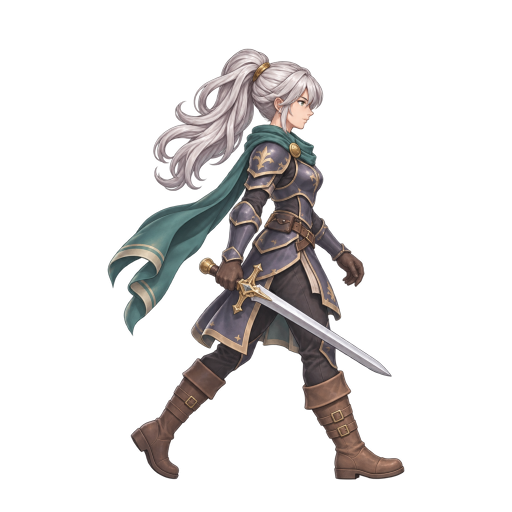

같은 원화, 512×512 캔버스, 8프레임·8 FPS. A는 sprite-maker의 원본 Rust 변형 렌더러, B는 GPT 시트 생성 후 sprite-gen으로 분할한 결과입니다. 세 번째는 변형을 끄고 파츠를 딱딱하게 나눈 원인 확인용 결과입니다. 모두 미승인 실험본입니다.
공통 GPT 원화

A: 칼 휨·하체 변형. B: 발 접지·다리 교차·루프 경계 재검토. 참고: 칼 휨은 줄지만 파츠 틈과 겹침 발생. 아래 선은 캔버스 기준선일 뿐 실제 접지 판정이 아닙니다. 크기는 비교용이며 실제 게임 화면은 아직 검증하지 않았습니다.
검증 보고서